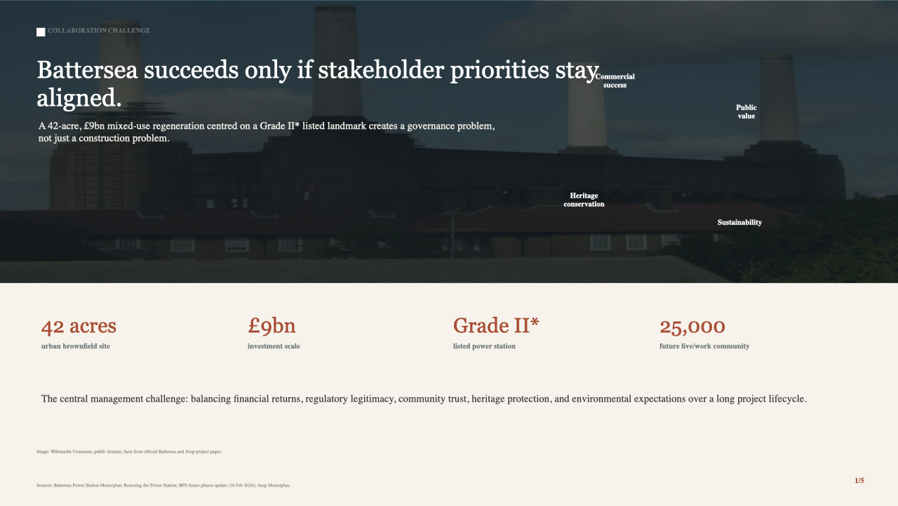
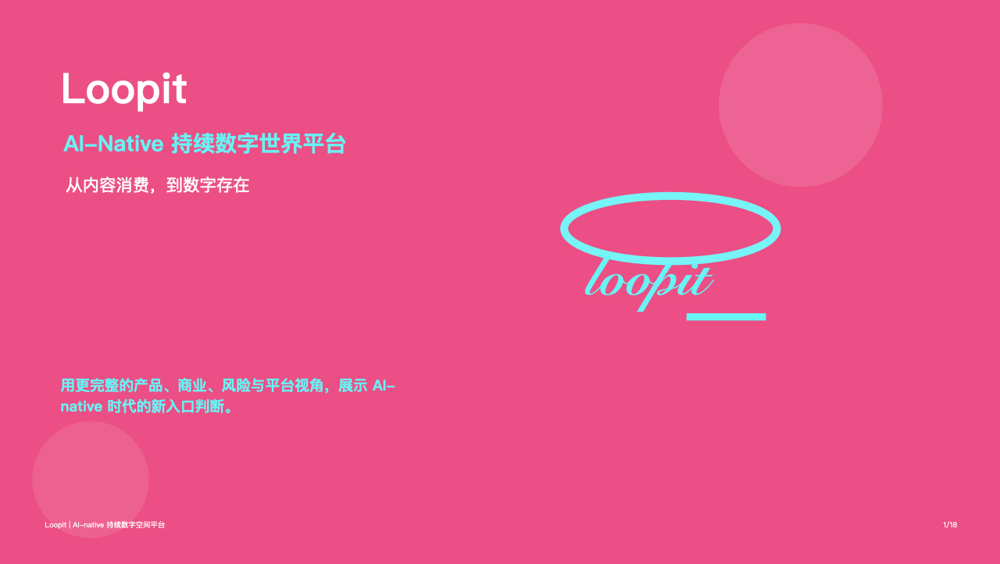

Warwick WMG · Collaboration Challenge
Battersea Power Station 利益相关者协作分析
以 Battersea Power Station 更新项目为案例，分析商业回报、公共价值、遗产保护与可持续目标之间的协调问题。
Programme & Project Management
我是一名在英国 Warwick WMG 攻读 Programme and Project Management 的研究生，也是一名对商业、项目管理、汽车行业和跨文化沟通都很感兴趣的人。
我喜欢处理复杂问题，也喜欢把混乱的信息整理成清晰的方案。
嗨！我是 Zijian You
我是一名在英国 Warwick WMG 攻读 Programme and Project Management 的研究生，也是一名对商业、项目管理、汽车行业和跨文化沟通都很感兴趣的人。
我一直觉得，好的项目不只是把事情按时完成，更重要的是把不同的人、资源和想法连接起来。无论是在课堂上的可持续医疗合作项目，还是在实习中接触供应链、咨询和金融相关工作，我都越来越确定：我喜欢处理复杂问题，也喜欢把混乱的信息整理成清晰的方案。
因此，我正在慢慢建立属于自己的方向：
我关注
项目管理、商业分析、供应链、汽车行业、ESG
与战略咨询。这些领域看起来很不同，但它们都有一个共同点——都需要理解真实的业务问题，并用结构化的方法找到可执行的解决方案。
在过去的经历中，我曾接触过Xiaomi的供应链工作、KPMG 的企业实习经历，中信证券实习经历以及金融行业相关分析工作。这些经历让我学会了如何在快节奏环境中处理信息、协调任务，也让我意识到，专业能力不仅仅是会使用工具，更是能够理解问题、推动沟通、持续交付结果。
我不是一个只喜欢“写在纸上”的人。相比单纯讨论概念，我更喜欢把想法做成真实可见的东西：一份清晰的行业研究、一套完整的求职作品集、一个可以展示自己的个人网站，或者一个能帮助我长期积累职业竞争力的小系统。
我现在也在探索如何用 AI 和代码工具提升自己的学习、求职和内容表达效率。我希望这个网站不仅是一个介绍我的页面，也能成为我记录成长、展示项目、整理思考的地方。
生活中的我喜欢游戏、汽车、旅行、视频内容和观察不同城市里的生活细节。有时候我会认真研究一个行业趋势，有时候也会沉迷于研究一套游戏技能搭配。对我来说，这些兴趣并不冲突，它们都让我保持好奇，也让我更愿意从不同角度理解世界。
目前，我正在英国继续完成研究生学习，同时也在为未来进入商业、项目管理、汽车或咨询相关领域做准备。
这个网站会记录我的项目、经历、想法和一些正在成形的计划。它可能不会一开始就很完美，但会随着我的学习、实习和职业探索不断更新。
欢迎来到这里，认识一个正在努力把想法变成现实的我。
Experience
围绕高端家庭越野旅行场景，整理竞品服务、用户需求和售后触点，形成 Kunlun 车主服务包方案。
主导中国新式茶饮市场进入可行性分析，完成从宏观市场到单店盈利模型的研究框架与完整报告。
Internship Projects
这里放实习期间完成的报告、方案和研究底稿。
 中国新式茶饮市场进入可行性分析
市场规模、竞争格局、进入模式与单店财务测算
中国新式茶饮市场进入可行性分析
市场规模、竞争格局、进入模式与单店财务测算
从宏观人口、人均可支配收入和餐饮消费出发，进一步分析城市层级、消费者趋势、竞争品牌与单店模型。
使用波特五力识别供应链深度与数字化运营两类壁垒，并对比自建、联营、加盟和并购四种进入方式。
测算资本支出 30-50 万元、原料 35-40%、租金与人力各 15-20%，推演 12-18 个月投资回收周期。
 Kunlun 车主服务包方案
用户场景、服务标杆、权益结构与服务流程
Kunlun 车主服务包方案
用户场景、服务标杆、权益结构与服务流程
关注周末、假期、露营和长途旅行，梳理实时状态、人工安抚、专业接送、数字交车与减少交接等需求。
将方案分为 Essential Care、Travel Assurance、Premium Concierge 三层，覆盖基础保养、旅行保障与高触达管家服务。
University Projects
这里放了我在华威 WMG 参与的课程项目，也有我课外完成的个人作品。

以 Battersea Power Station 更新项目为案例，分析商业回报、公共价值、遗产保护与可持续目标之间的协调问题。

从内容消费到数字存在，围绕产品、商业、风险与平台视角，整理 AI-native 时代的新入口判断。
课堂团队围绕可持续医疗合作展开研究。我负责整合不同成员、资源和想法，并把复杂信息整理成清晰的方案。
Education & Leadership
MSc Programme and Project Management
项目规划管理与控制、组织人员与绩效、项目财务管理、变革管理、多项目与项目群环境管理。BSc Accounting, Finance and Management
管理会计、财务会计、公司分析与管理、应用会计与财务管理、会计与咨询案例研究；2021 年谢菲尔德大学奖学金。统筹公益与慈善活动，承担学生、校方与中国驻曼彻斯特总领馆之间的沟通，并推动校友会创建与校友网络建设。
统筹部门活动计划，参与救护员资格考核流程与现场监考，策划艾滋病预防与反歧视主题活动。
Skills
市场进入分析、竞品研究、项目规划与控制、利益相关者协调、服务流程设计。
财务报表分析、Excel 建模与可视化、数据透视表、VLOOKUP、宏。
Word、PowerPoint、金蝶、用友、SAP；中文母语，英语可作为工作语言。
CV & Contact
这里可以查看中文和英文 PDF 简历，网站中的项目材料也可以直接打开。
shicaodeyouxiang@163.com 18846839735 微信：shicaowx